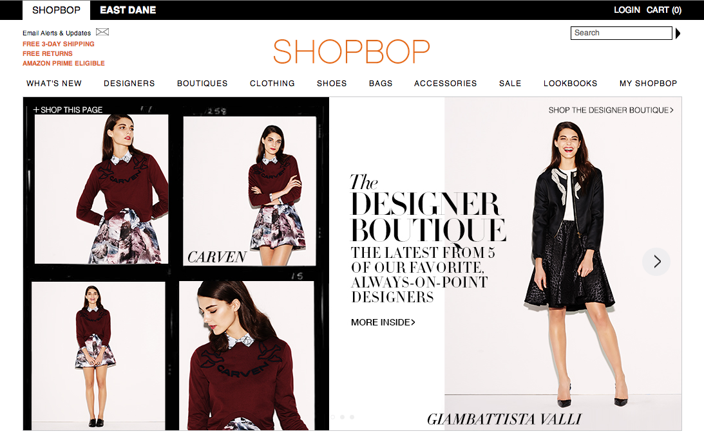

MEG MAKES
Drinking from the web development fire hose at Dev Bootcamp.
Website design and user experience.
August 9, 2014
First DBC blog post! Very exciting. This week we learned about design and user experience to help us put together our blogs. This whole process really forced me to think about some of the characteristics that I value when looking at other websites. There are a few things that are top of mind:
Three websites come to mind that really exemplify these characteristics: The New Yorker, Shopbop, and Google. The New Yorker's website has a large amount of content, but they do a great job of organizing it so that the user is not overwhelmed when looking at the page. I find text-heavy websites difficult to process quickly. Since The New Yorker is a magazine and people go to their website to read their articles, the website could have easily been primarily text based with a laundry list of article titles for users to sift through. One of the things I really enjoy about the site is that they do a nice job of bringing the top articles to life by adding images and a sentence or two with additional details about the article. This allows me as user to make a quick decision around whether I want to click the link and read the article or not. Additionally, they curate the experience. They don't list all articles in the current issue on the front page. That information is easy to navigate to, but they focus the users attention and highlight a few key articles the want you to look at.
Shopbop is my favorite place to shop online. When I'm looking at clothing online, pictures play a huge role when I am deciding whether to buy an item or not. Shopbop does a fantastic job of merchandising the clothing with high-quality photos that speak for themselves. The white background and clean layout really make the photos pop and draw the user in. They do a fantastic job of creating emotion through the photos. While they are in the business of selling clothing, they are really selling a lifestyle that they want the user to aspire to, with the clothes helping facilitate that lifestyle. Shopbop is also incredibly easy to navigate. Large tabs along the bottom of the header direct the user to more specific categories, which allows even a new user to quickly find what ever she is looking for.
You can't really get more simple than the Google website, and that's one of the main reasons I like it so much. It does one thing -- lets you search for content on the Internet -- and it does that one thing really well. All the white space on the page focuses your attention on the search box. There is no question about where you are supposed to look on the page or what value the site provides, which creates a great user experience. While Google now has many different products and services, their minimalist website focuses the user on their bread and butter: search.
All three of these websites serve very different purposes, but to me they are all great examples of how strong design impacts user experience. And as you can probably tell from the sites I mentioned here and the design of this blog, I'm a big fan of minimalist white backgrounds with black text.
Comments or thoughts? I'd love to hear them: margaret.sandman@gmail.com.